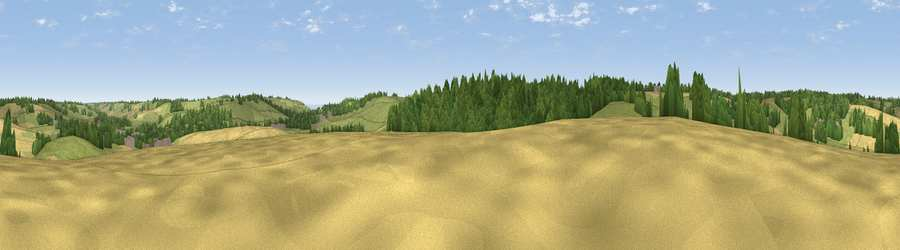

Viewpoint near Lyminge
#33811 in England · top 50% of its area beats it · near Lyminge · path 255 mWhere it is
The exact computed spot (TR 15125 40475). Click the marker for map links.
Public access: the nearest public right of way is about 255 m away — the final stretch may cross private land. Computed from Natural England's CRoW access layer and OpenStreetMap rights of way — not the legal definitive map. Always verify locally.
The view, rendered

A 360° render of this exact spot computed from the terrain model, tree cover and land cover — summer colours, afternoon light, calibrated against photographs of famous viewpoints. Real trees, hedges and buildings will differ in detail.
The panorama
Grey silhouette: terrain skyline in each direction (720 bearings, Earth curvature and refraction included). Dashed green: skyline with trees (+15 m) and buildings (+8 m) as obstacles. Blue strip: how far the ground is visible on each bearing.
Where the view opens
Wedge length = distance to the farthest visible ground on that bearing (vegetation-aware). Rings at 10, 25 and 50 km.
What fills the view
48% grassland · 32% woodland · 17% cropland · 2% built-up
Angular shares of the visible panorama (visual magnitude), not map area. Landscape diversity 0.49 (0–1 Shannon).
Key numbers
More beautiful places nearby
The staircase of upgrades: each row has a higher view potential than everything closer. Driving times are estimates from straight-line distance, calibrated against real road routing — check an actual route before setting out.
| Place | Direction | Drive | Score |
|---|---|---|---|
| Viewpoint near Postling | SW · 1 km | ~4 min | 58.7 |
| Viewpoint near Postling | WSW · 2 km | ~5 min | 71.2 |
| Tolsford Hill | S · 2 km | ~6 min | 77.9 |
| Viewpoint near Capel-le-Ferne | ESE · 9 km | ~18 min | 80.2 |
| Viewpoint near Willingdon | WSW · 69 km | ~92 min | 83.4 |
| Wilmington Hill | WSW · 71 km | ~94 min | 85.4 |
| Viewpoint near Alciston | WSW · 75 km | ~98 min | 85.8 |
| Viewpoint near Alciston | WSW · 75 km | ~98 min | 86.8 |
51.12315, 1.07277 · source: screening · position refined by local search. Computed location — check access rights before visiting.